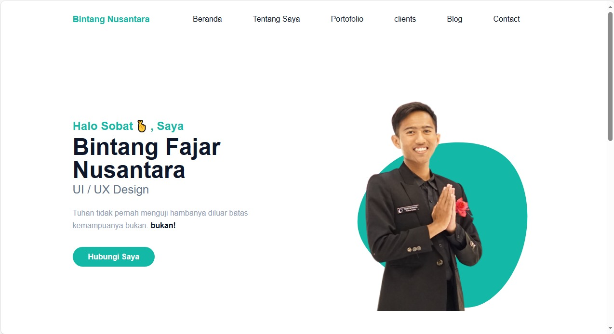

Personal Portfolio
Website portofolio personal yang dirancang sebagai ruang untuk bercerita, bereksperimen, dan terhubung.
Halo, saya Bintang Fajar Nusantara — mahasiswa Teknik Informatika yang mengeksplorasi dunia UI/UX, desain digital, dan teknologi web.

Perpaduan antara rasa penasaran, empati, dan perhatian terhadap detail untuk menciptakan pengalaman digital yang relevan.
Saya percaya karya yang baik tidak hanya terlihat keren, tapi juga terasa mudah digunakan dan punya cerita. Saat ini saya terus bertumbuh lewat proyek-proyek digital, belajar dari proses, dan berkolaborasi dengan orang-orang hebat.
Beberapa eksperimen dan proyek yang merepresentasikan perjalanan kreatif saya.

Website portofolio personal yang dirancang sebagai ruang untuk bercerita, bereksperimen, dan terhubung.
Kumpulan eksplorasi visual dan desain grafis untuk mengasah perspektif serta menemukan gaya baru.
Terbuka untuk kolaborasi, diskusi, atau sekadar menyapa.